Passo a passo, do PDF da planta à proposta. As telas são do protótipo, com o usuário Tom Reilly (administrador da Northfield Framing & Siding) e o projeto de exemplo Casa modelo.
Use o computador
Medir exige mouse e tela grande. O Measure foi feito para o computador; no celular, ele será só de consulta (veja Situação do protótipo).
Projetos
Para que serve: manter todos os orçamentos numa lista, com os prazos das propostas à vista.
Quem pode fazer
Quem tem Medir plantas (takeoff) (perfis padrão: Administrador e Gestor de obras).
Abra o Measure: a lista de Projetos mostra cada projeto com o cliente, o local, o tipo, o estimador, o prazo da proposta e a situação. As abas filtram por situação: Em orçamento, Proposta enviada, Ganha, Perdida. Enquanto o projeto está Em orçamento, o prazo da proposta fica destacado quando venceu, é hoje ou está a até 3 dias.

Criar um projeto
- Clique em Novo projeto.
- Preencha o projeto e o cliente (escolha entre os seus contatos ou crie um sem sair do formulário), o local da obra (endereço, cidade, estado, ZIP) e os dados da proposta (prazo, estimador e a obra a que ele pertence, para aditivo ou ampliação).
- Clique em Criar projeto.
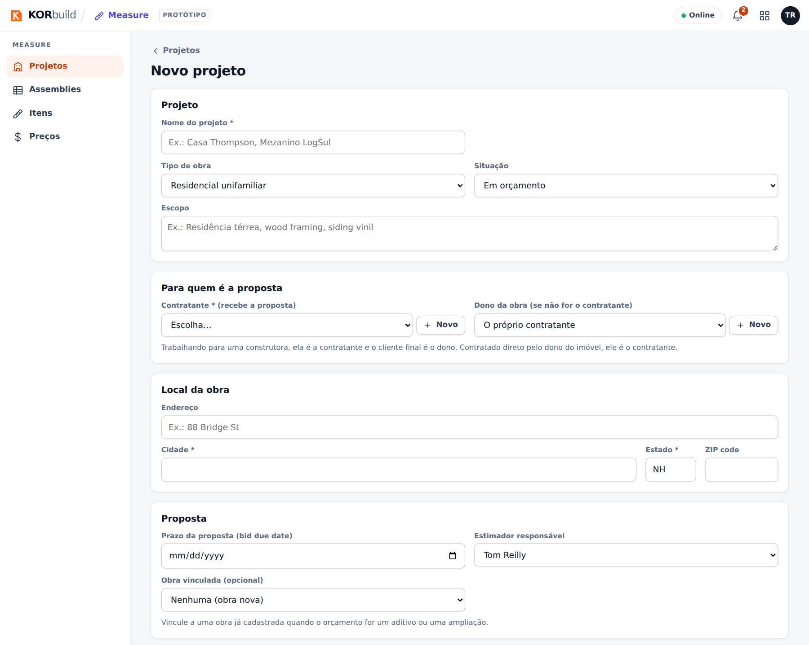
Nome, cliente, cidade e estado são obrigatórios. Para mudar o projeto depois, abra e clique em Editar projeto; Excluir fica na edição.
Enviar as plantas
- Abra o projeto.
- Clique em Enviar PDF e escolha o jogo de plantas. Cada página vira uma folha (A-101, A-201…).
A tabela de Folhas mostra a escala de cada folha: sem escala, conferida ou conferência com diferença.
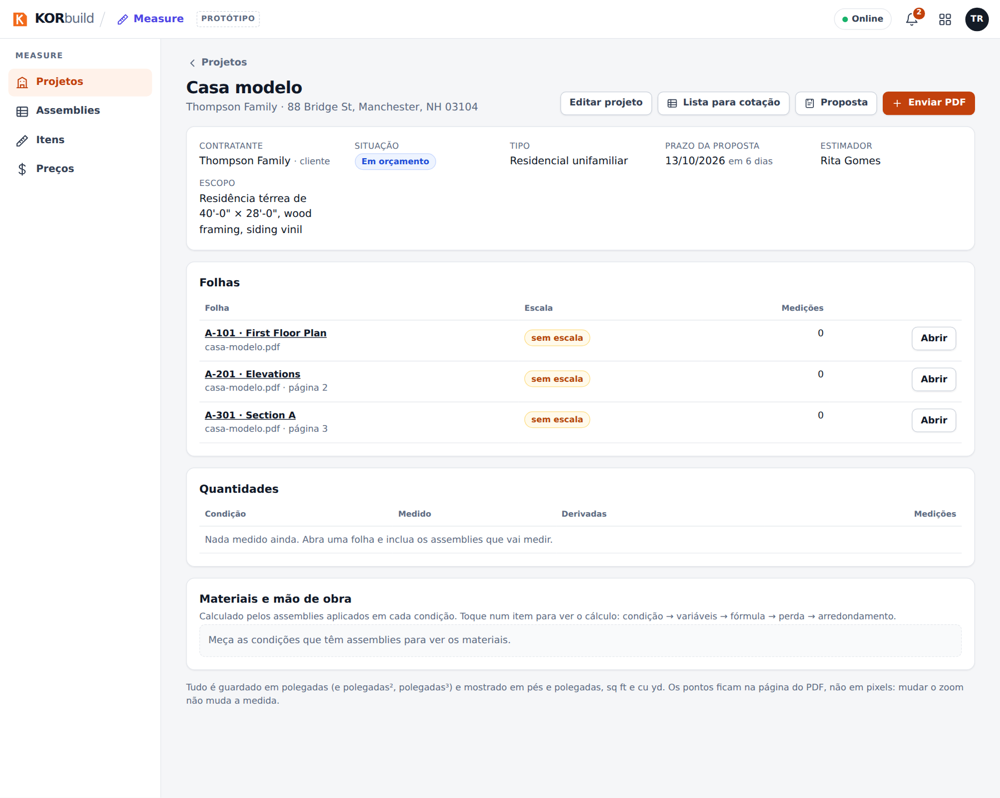
Definir e conferir a escala
Por quê: toda medida depende da escala. Conferir numa segunda cota pega plantas impressas ou escaneadas fora de escala.
- Abra uma folha (Abrir). A planta ocupa a tela, com as condições à esquerda.
- Clique no botão da escala, na barra (Definir escala, em âmbar, enquanto a folha não tem escala).
-
Escolha a escala escrita na planta (por exemplo,
1/4" = 1'-0") e clique em Usar esta escala. Se a planta estiver fora de escala, use Calibrar por uma cota: clique nas duas pontas de uma cota conhecida e digite o comprimento.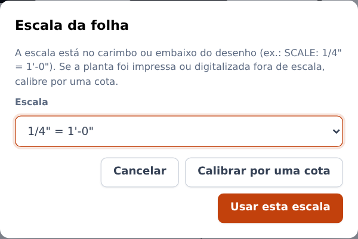
A escala da folha -
O KORbuild pede para conferir: clique nas duas pontas de outra cota conhecida e digite o comprimento como está escrito na planta (
40'-0",40',12'-6 1/2"…).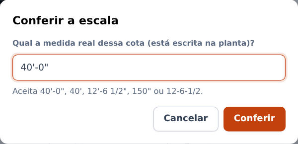
Conferir a escala numa cota -
A barra mostra o resultado: conferida em verde, ou diferença em vermelho quando passa de 1%.
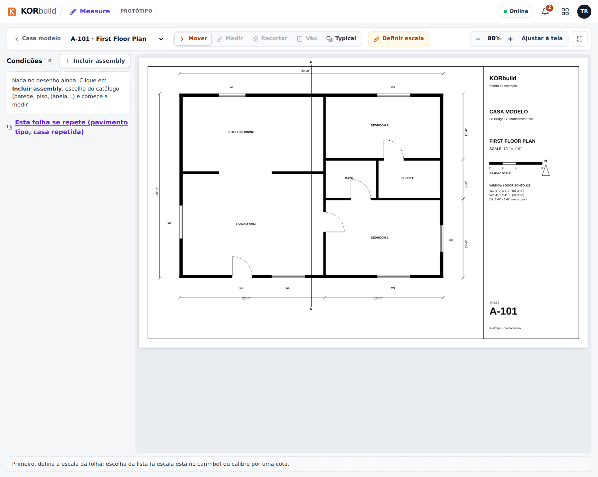
Incluir o que vai medir (assemblies)
O desenho começa vazio. Você inclui um assembly para cada coisa que vai medir nesta folha: o assembly traz os materiais e a mão de obra que a medição vai gerar.
- No painel de condições, clique em Incluir assembly.
-
Escolha um assembly. A lista vem por tipo — Linear (paredes), Área (pisos, siding, lajes) e Contagem (portas, janelas) — com um resumo das linhas. Os assemblies que já estão no desenho vêm marcados. Só medir, sem assembly cria uma condição sem materiais (dá para aplicar um assembly depois).
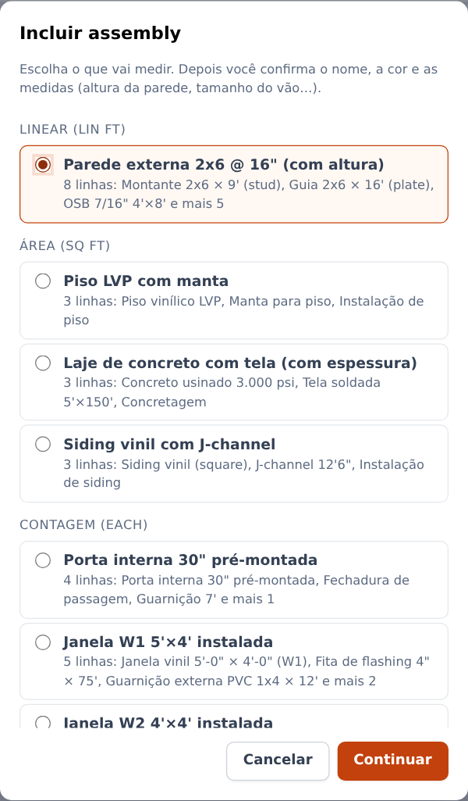
Escolher um assembly -
Clique em Continuar e confirme:
- o nome no desenho (por exemplo, Paredes externas);
- a cor das marcações;
- as propriedades: altura da parede, inclinação, espessura da laje, o tamanho do vão de uma janela ou porta;
- para paredes e siding, Descontar os vãos de: as contagens de janelas e portas cujos vãos saem desta parede ou área.
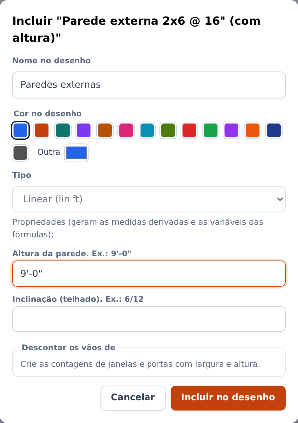
Nome, cor e medidas -
Clique em Incluir no desenho. A condição aparece no painel, já escolhida para medir.
A mesma condição em outra folha
Em Incluir assembly, a seção Já medido em outras folhas deste projeto traz a mesma condição para esta folha (por exemplo, as paredes do 1º e do 2º pavimento): as medições somam num total só.
Medir
Escolha uma condição no painel; a ferramenta Medir fica ligada.
| Tipo | Como medir |
|---|---|
| Contagem | Um clique por item. |
| Linear | Clique em cada ponto. Duplo clique ou Enter termina, Esc cancela, Backspace tira o último ponto. |
| Área | Igual à linear; um clique no primeiro ponto também fecha a área. |
- Shift deixa a linha reta (horizontal ou vertical).
- Perto (6 px) de um ponto já medido, o clique gruda nele; Alt desliga isso.
- Segure a barra de espaço (ou use Mover) para arrastar a planta. Ctrl + rolagem do mouse dá zoom no cursor; Ajustar à tela mostra a folha inteira. O zoom nunca muda uma medida.
- Enquanto desenha, a linha tracejada mostra o comprimento ou a área ao vivo. A linha de baixo sempre diz o próximo passo.

O painel agrupa as condições por tipo, com o total nesta folha. Abra uma condição (seta) para ver as quantidades derivadas (superfície da parede, volume…), os assemblies (aplicar ou tirar), as medições nesta folha (apagar uma a uma), e Editar ou Excluir. A caixa ao lado do nome mostra ou oculta as marcações no desenho, sem mudar nenhuma quantidade.
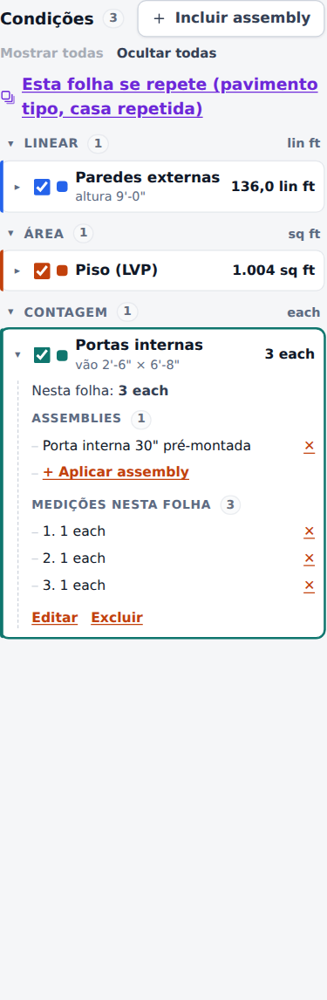
Recortar (borracha)
Numa área (um piso, por exemplo), escolha Recortar e desenhe o polígono que sai (escada, chaminé, um banheiro com outro acabamento). Ele aparece hachurado em vermelho, com "− X sq ft", e entra na lista como recorte.
Janelas e portas: os vãos
Janelas e portas são contagens com o tamanho do vão (largura × altura). Paredes e siding que descontam esses vãos perdem a área sozinhos: conte mais uma janela e o OSB, o drywall e o siding já mudam.
Na fachada, a ferramenta Vão vai além:
- Escolha Vão e clique em dois cantos opostos da janela ou da porta.
- Escolha qual contagem é (ela soma +1) e confirme as áreas por trás de onde descontar.
- Clique em Contar e recortar.
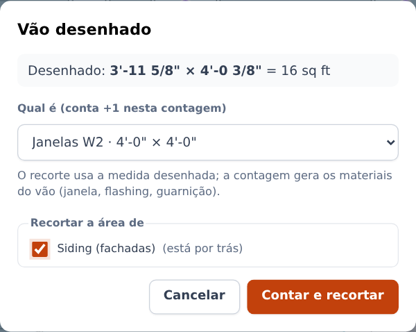
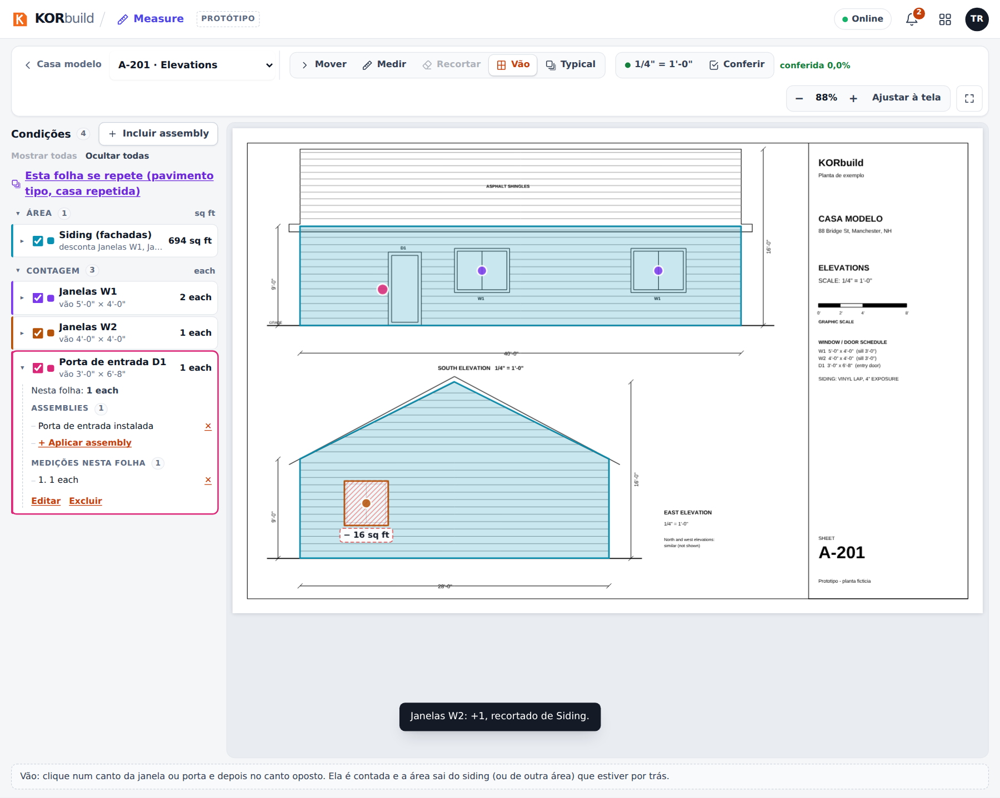
O vão já recortado pelo desenho não é descontado de novo pelo tamanho (sem desconto em dobro). Apagar a contagem ou o recorte apaga os dois.
Unidades repetidas (typicals)
Para que serve: medir uma vez o que se repete — o pavimento tipo, o apartamento tipo, a mesma casa construída seis vezes.
- A folha inteira se repete: no painel, clique em Esta folha se repete (pavimento tipo, casa repetida) e informe as ocorrências (por exemplo, Bloco A × 3 e Bloco B × 3).
- Só parte da folha se repete: escolha Typical na barra, clique em dois cantos da região e informe as ocorrências.
Tudo o que for medido dentro vale × o total de ocorrências — quantidades, materiais, lista para cotação e proposta. O projeto mostra, para cada typical, a quantidade por unidade, por ocorrência e no total.
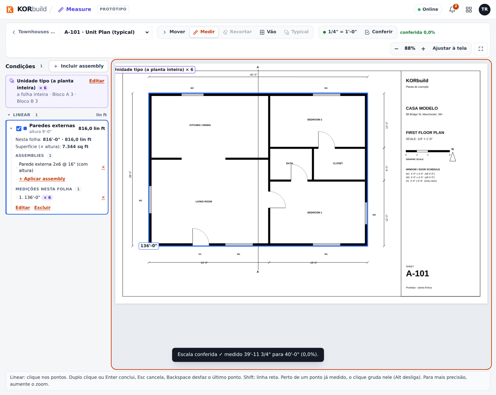
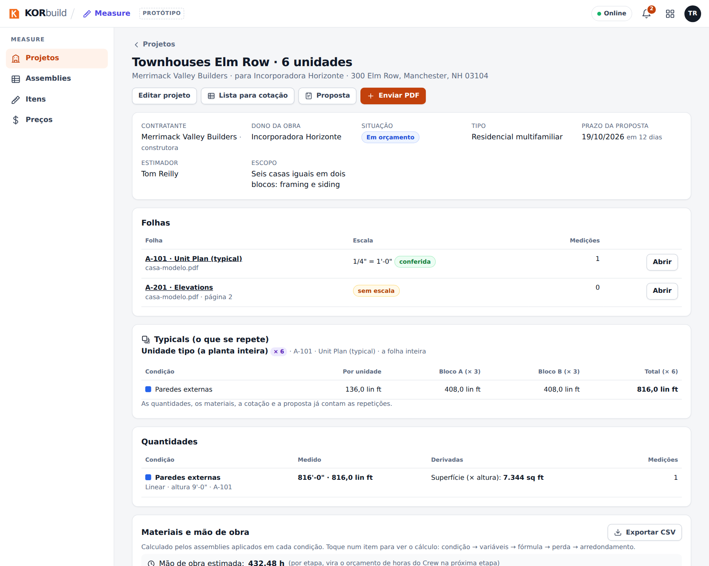
Conferir quantidades, materiais e mão de obra
De volta ao projeto (o nome do projeto, à esquerda na barra do visor):
-
Quantidades: cada condição com o total medido, os valores derivados (por exemplo, a superfície × altura) e o número de medições.
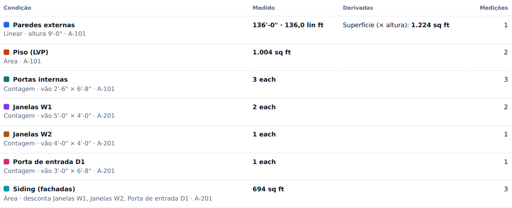
Quantidades por condição -
Materiais e mão de obra: cada item na unidade de compra (chapas, caixas, rolos, peças, horas), por categoria, com as horas estimadas de mão de obra. Clique num item para ver a conta: condição → variáveis → fórmula → perda → arredondamento.

Materiais e mão de obra, com a conta de um item -
Pendências: linhas que ainda não dá para calcular (por exemplo, um assembly que precisa de uma altura que a condição não tem, ou uma condição ainda não medida).
- Exportar CSV baixa as quantidades com a conta inteira.
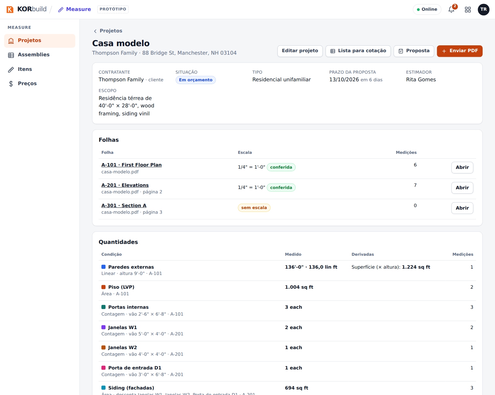
Pedir cotação aos fornecedores
- No projeto, clique em Lista para cotação.
- Confira Responder até, Entregar em e as Observações para o fornecedor.
- Cada fornecedor recebe a própria lista — só os itens das etapas que ele fornece (Settings › Contatos) —, na unidade de compra, já com perda e arredondamento, sem preços e sem mão de obra.
- Para cada fornecedor:
- Enviar por e-mail abre o e-mail pronto, com a lista e o prazo de resposta;
- PDF abre o pedido de cotação com o seu logo e as colunas de preço em branco;
- Registrar preços recebidos guarda os preços que o fornecedor devolveu: eles viram o preço dos itens a partir daquela data.
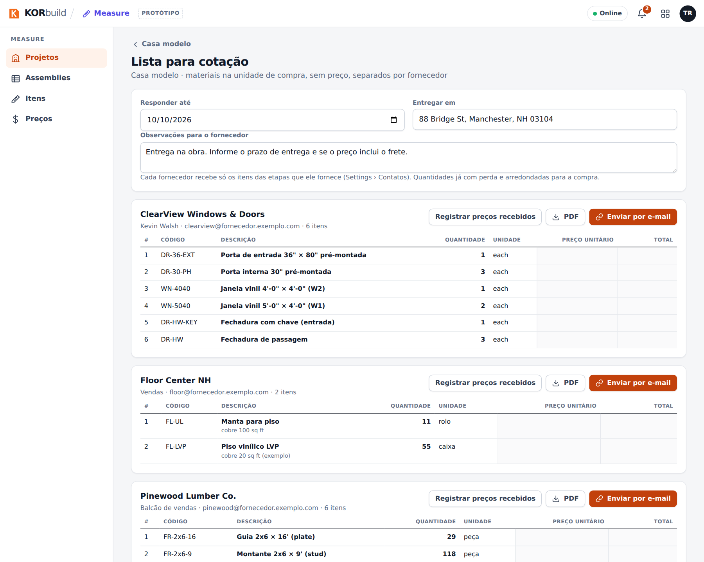
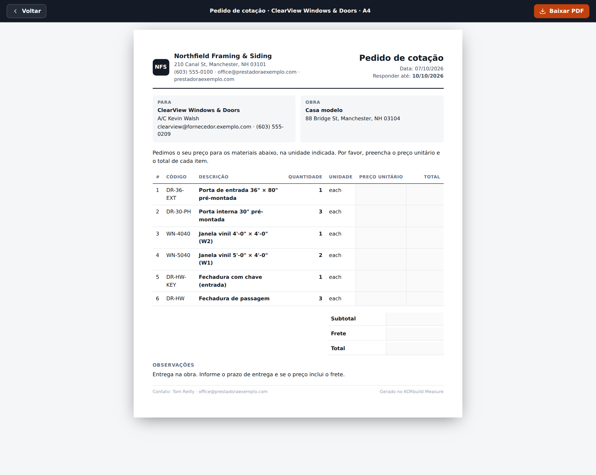
Preços e margens
Para que serve: saber o custo de cada item e como ele vira preço de venda.
Abra Preços:
- Margens: overhead % e lucro, em markup (sobre o custo) ou em margem (parte do preço de venda), e o imposto sobre material. Nova versão cria margens novas a partir de uma data, com o motivo; as antigas ficam no histórico.
- Itens: o preço atual de cada item, desde quando e de onde veio (tabela de exemplo, digitado, Crew, cotação de um fornecedor). Novo preço inclui um preço a partir de uma data; nada é sobrescrito.
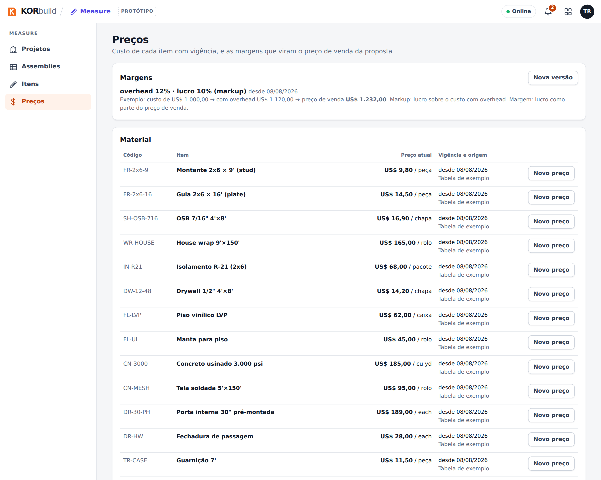
Quem pode mudar os preços
Quem tem Itens e assemblies (perfil padrão: Administrador). Os outros veem só para consulta.
Montar e emitir a proposta
- No projeto, clique em Proposta.
- Confira o Escopo (vem do projeto).
- Itens da proposta: uma linha por etapa, material e mão de obra juntos. Cada linha mostra a base (quantidades e horas estimadas), o custo e o preço calculado (preços do catálogo + margens).
- Digite outro valor quando quiser (um preço fechado); apague para voltar ao calculado.
- Desmarque uma linha para deixá-la de fora; inclua outros itens (mobilização, caçamba…).
- Mostrar as quantidades de material no documento é opcional.
- Confira a validade e os termos (vêm do perfil da empresa e podem ser ajustados).
- Ver o documento mostra o PDF; Emitir proposta dá o número (
P-2026-001…), congela e passa o projeto para Proposta enviada. Cada emissão é uma versão nova.
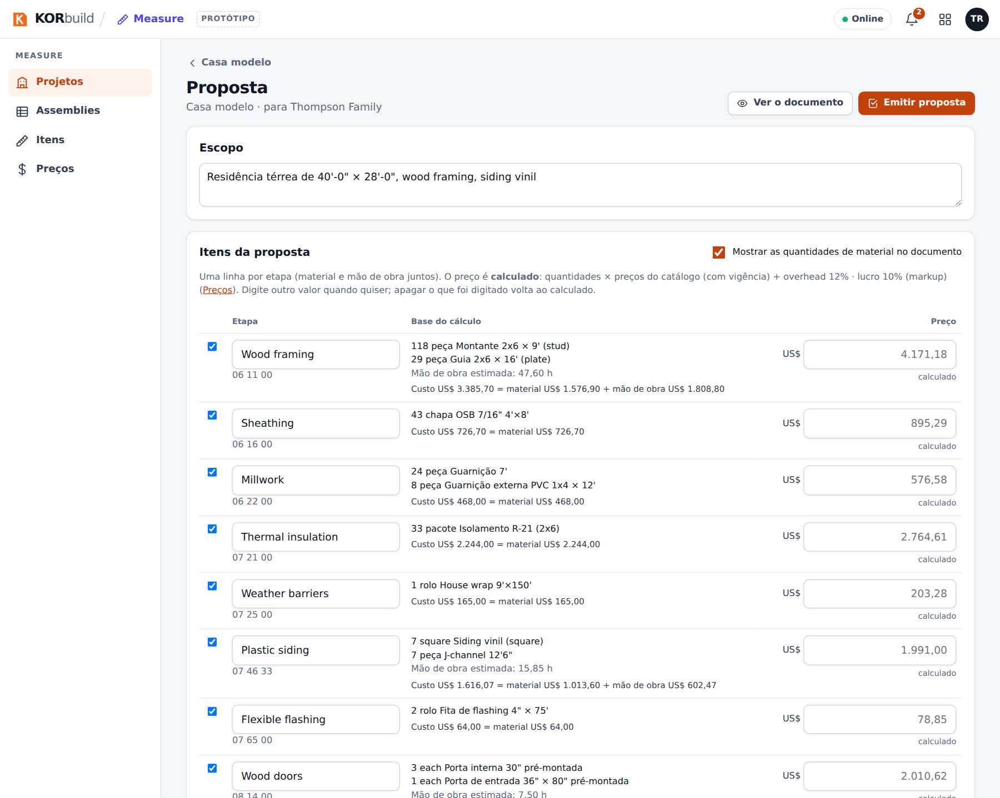
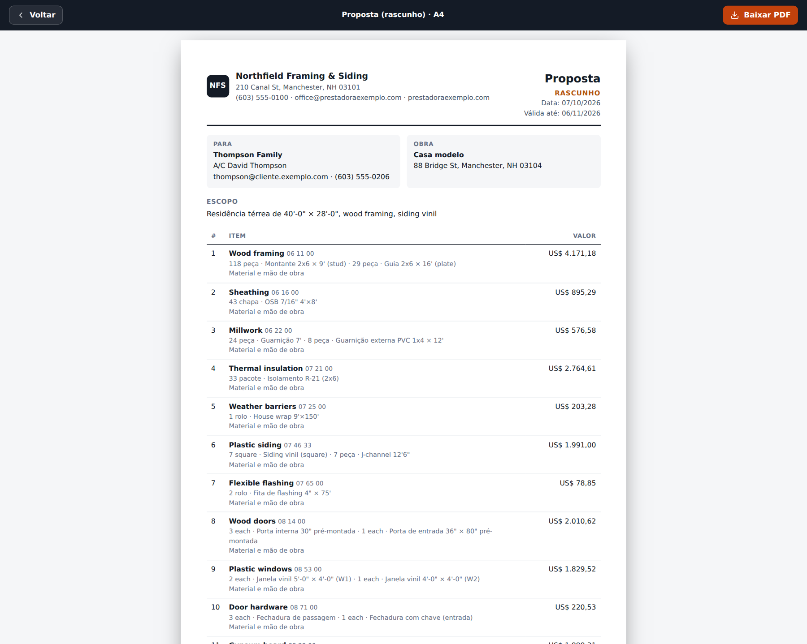
O que o cliente nunca vê
O documento mostra só o preço de cada linha. Custo, overhead e lucro ficam dentro do KORbuild, guardados com a versão emitida.
Quando o cliente aceitar, passe o projeto para Ganha (Editar projeto). O projeto ganho pode criar a obra: Criar obra a partir deste projeto, com o cliente e o endereço já preenchidos.
O catálogo: itens e assemblies
Quem pode fazer
Quem tem Itens e assemblies (perfil padrão: Administrador). Sem ela, itens e fórmulas ficam só para consulta.
Itens (Measure › Itens) são o que se compra ou se paga: código, nome, unidade de compra, categoria (material, mão de obra, equipamento, subempreiteiro), etapa e observações. Item usado num assembly não pode ser excluído.
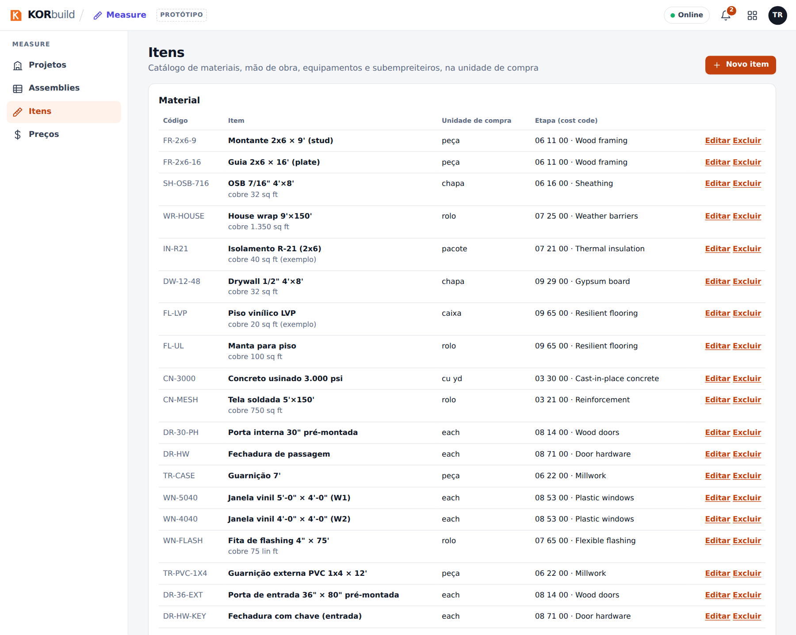
Assemblies (Measure › Assemblies) são listas de linhas para um tipo de condição. Cada linha tem:
| Coluna | O que é |
|---|---|
| Item | O que a linha gera, na unidade de compra. |
| Fórmula | A quantidade bruta, usando as variáveis da condição (por exemplo, NetSurfaceArea / 32 chapas de OSB). |
| Perda | Um % somado à quantidade bruta. |
| Arredondamento | Nenhum, ou para cima de 1, 0,5 ou 0,25 (do jeito que o serviço compra). |
| Teste | O resultado, ao vivo, com valores de exemplo: bruta → com perda → arredondada. |
Abaixo das linhas, o editor lista as variáveis disponíveis para aquele tipo de condição. As fórmulas aceitam só números, + − × ÷ ^, parênteses, essas variáveis e ceil floor round min max sqrt abs; qualquer outra coisa é recusada ao digitar e ao salvar.
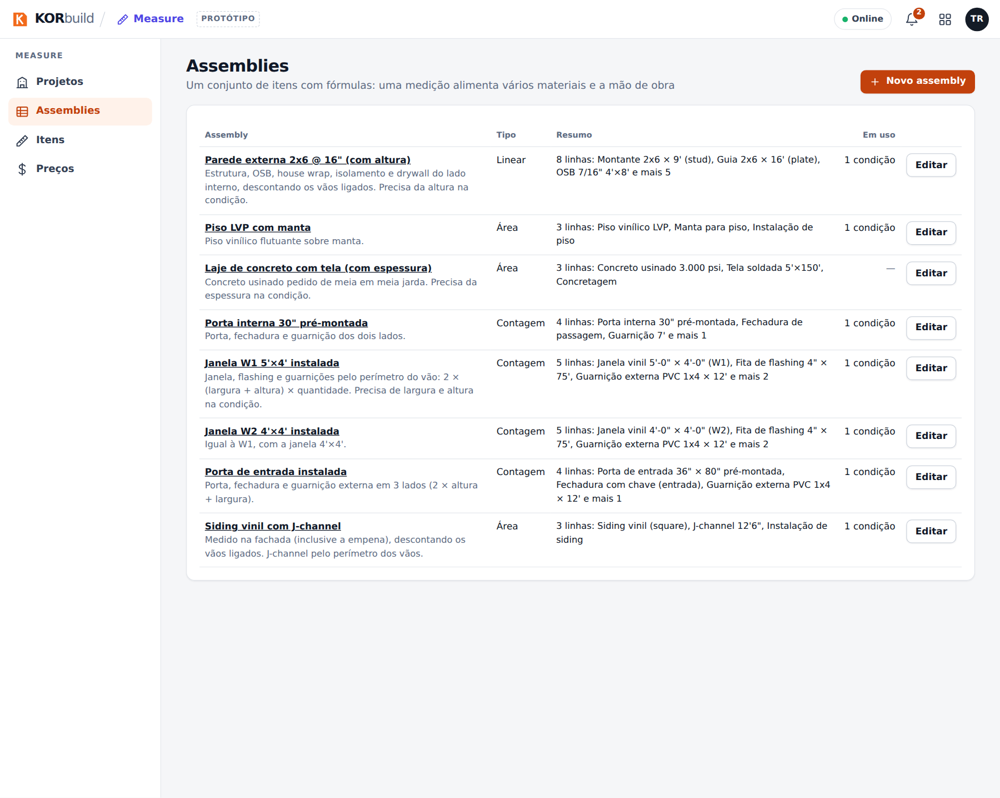
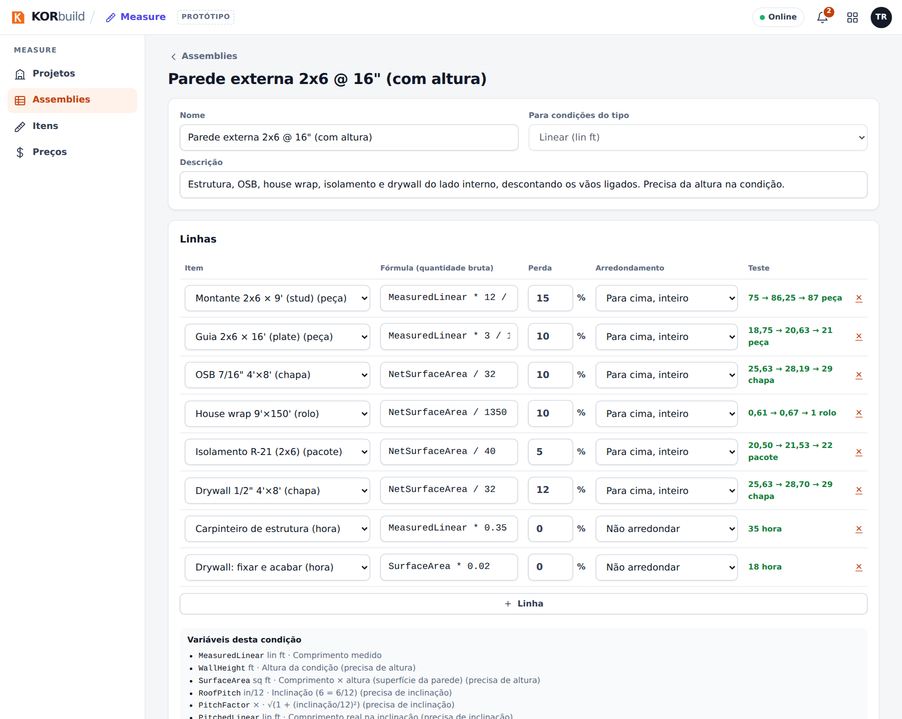
Mensagens e alertas
| Mensagem | O que significa | O que fazer |
|---|---|---|
| sem escala (folha) | A folha ainda não tem escala; medir fica desligado. | Defina e confira a escala. |
| diferença (escala) | A cota de conferência difere mais de 1%. | Calibre por uma cota, ou aumente o zoom e confira de novo. |
| Falta na condição: … | Uma linha do assembly precisa de uma propriedade que a condição não tem (altura, espessura, inclinação). | Edite a condição e preencha. |
| nada medido ainda | O assembly está no desenho, mas não tem medição. | Meça, ou exclua. |
| Fórmula recusada | A fórmula usa algo que não é permitido, divide por zero ou dá negativo. | Corrija a fórmula; a mensagem diz a linha. |
| Sem fornecedor (lista para cotação) | Nenhum contato fornece aquela etapa. | Marque a etapa num fornecedor (Settings › Contatos). |
| Sem preço (proposta) | Um item não tem preço no catálogo. | Inclua um preço em Preços, ou digite o preço da linha. |